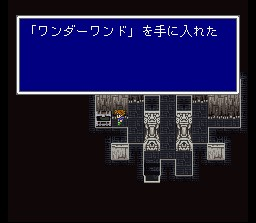

포크타워
포크타워의 최강 두 흑,백마법은 동시에 얻어야 하므로, 일행은 파티를 둘로 나누어 올라가게 됩니다. 오른쪽은 전사계열 캐릭터를, 왼쪽은 마도사계열 캐릭터를 보내세요. 각 루트에 나타나는 몬스터들도 딱 분위기에 맞게 생겼습니다. 오른쪽은 근육질들, 왼쪽은 음침한 놈들.. 저는 보통 의도적으로 둘은 전사계, 둘은 마법사계로 키우는데 그렇게 하면 여기서 편합니다.
 두 파티가 모두 최상층에 도달하면 보스전이 벌어집니다.
오른쪽의
홀리를 얻을 때는 미노타우루스가 출현합니다. 아까 만났던 세크메티의 형이랍니다.
회복에만 좀 신경쓰면 간단한 녀석입니다. 힘의 마법 홀리를 보여주겠다며 폼을 잡는데
MP가 없다는 메시지가..
왼쪽의 프레아를 얻을 때는 모든 것을 아는
자가 출현합니다. 마법공격 위주이니 리플렉트링이나 카방클을 치시고, 직접공격을
맞으면 리턴을 하니 상황이 불리해졌을 때 활용하세요. 마지막에 쓰는 프레아만 좀
주의하시면 됩니다. (이 녀석은 낮은 확률로 골나고의 항아리를 갖고 있습니다.)
마법을 얻으면 비공정 기지가 나오고, 지하 함정에 빠졌던 시드를 만납니다. 시드가 비공정을 잠수함으로 개조해 줍니다.